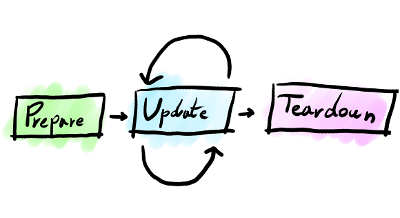
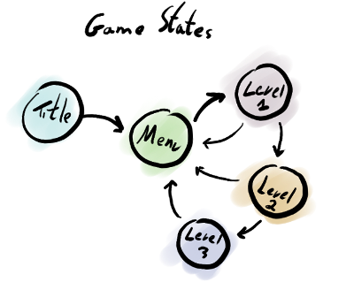

Game essentials¶
The heart of almost every game is the game loop. The game loop processes events, runs the game logic and generates the game visuals and sounds.
game_loop¶
-
int
game_loop(create_func_t create, update_func_t update, destroy_func_t destroy)¶ Call this function to start your game.
int main(void) { return game_loop(create_game, update_game, destroy_game); }
To run its game loop, Cage must have a game state. The game state is created, updated and destroyed using three pointers to three functions:
create function¶
-
typedef void *(*
create_func_t)(void)¶ This is the prototype of the create function:
void* create_game(void) { // Put any level, menu or other game state setup code here // and return a pointer to your level data or NULL // in case of a failure. }
You may provide a create function to create and set up a game state. A game state will usually be a struct, holding sprites, images, fonts or any other assert required to run a level, a game menu or other game states. You pass a pointer to this function when you call game_loop() or game_state().
- Return
- pointer to your game state data or NULL on failure
update function¶
-
typedef
void(* update_func_t) (void *data, float elpased_ms) This is the prototype of the update function:
void update_game(void* data, float elapsed_ms) { // Update and draw your game }
The update function is called each time Cage wants you to update a new game frame. This is the place to change your game state, play or stop sound effects and draw your graphics.
You pass a pointer to this function when you call game_loop() or game_state().
- Parameters
data-the pointer you returned from the create function.
elapsed_ms-time passed since last update in milliseconds.
destroy function¶
-
typedef
void(* destroy_func_t) (void *data) This is the prototype of the destroy function that may be provided to Cage in order to free any allocated resources once a game state is being dismissed.
void destroy_game(void* data) { // Put any cleanup code here... }
You may pass a pointer to this function when you call game_loop() or game_state().
- Parameters
data-the pointer you returned from the create function.
The state functions share a common feature - the state data argument. The create function creates a state and returns a valid data pointer. The common pattern is to have a dedicated struct per state that holds all required state assets.
The update function will get the same state data pointer back, so it is able to use it to update and draw the game.
The destroy function will also get the same user data pointer, this time it will usually use it to clean any allocated assets.
Games will usually have different levels, menus, high score displays and the likes. These are represented as different game states.
Transitioning between different states allow you to have a more complex game structure. Use game_state() to change the active game state using a new set of state functions:
game_state¶
-
void
game_state(create_func_t create, update_func_t update, destroy_func_t destroy)¶ Call this function to change your game state functions.
void update_current_level(void* data, float elapsed_ms) { // Yay.. level was just completed, let's // change the game state to the next level. game_state(create_next_level, update_next_level, destroy_next_level); }
For example:
// These are the level state functions
void* create_level(void)
{
struct level_data* data = malloc(sizeof(struct level_data));
return level_data;
}
void update_level(void* data, float elapsed_ms)
{
// Update and draw your game
}
void destroy_level(void* data)
{
// Put any cleanup code here...
free(data);
}
// These are the game menu state functions
void* create_menu(void)
{
struct menu_data* data = malloc(sizeof(struct menu_data));
return menu_data;
}
void update_menu(void* data, float elapsed_ms)
{
// Handle the menu behavior.
// When ready, switch to the level game state:
game_state(create_level, update_level, destroy_level);
}
void destroy_menu(void* data)
{
// Put any cleamup code here...
free(data);
}
// This is your game!
int main(int argc, char ** argv)
{
// Set up the initial game state
return game_loop(create_menu, update_menu, destroy_menu);
}